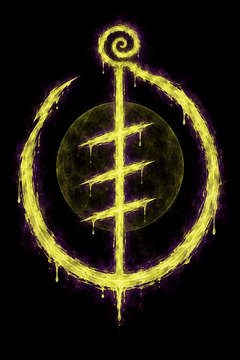
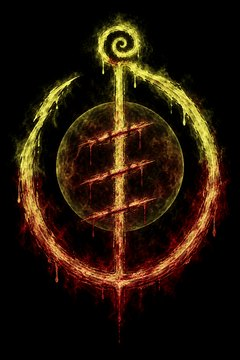

> ACESSO RESTRITO
> 2º ANDAR
> insira a credencial do andar
> CREDENCIAL RECUSADA


O.R.F.E.U. · limite diário de ruído excedido
INICIADO
O.R.F.E.U. · identificação
Você só poderá mover a ficha que escolher aqui.
Senha recusada.
Você move os Filhos da O.R.F.E.U. e o seu robô. As cobaias ficam invisíveis até o Mestre revelar.
Escolha o andar. As 7 cobaias vão para a Zona Neutra dele.
Arquivo encontrado
Digite a senha nova. Copie o resultado e cole no config.js, na linha do andar certo.
config.js